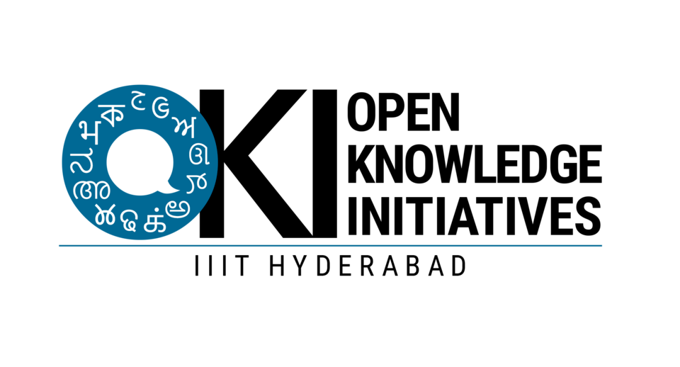
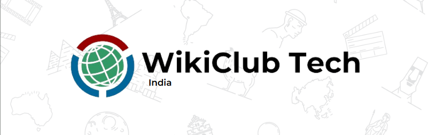
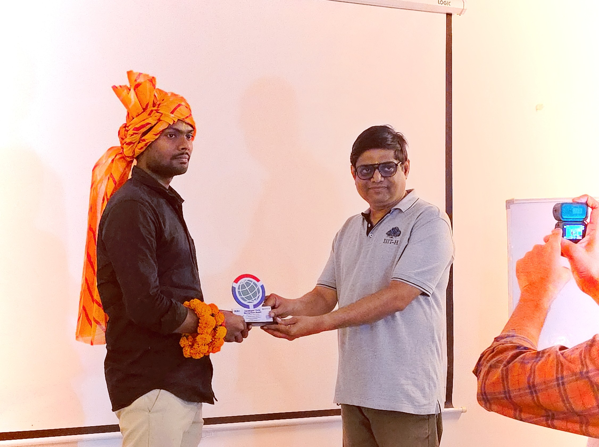
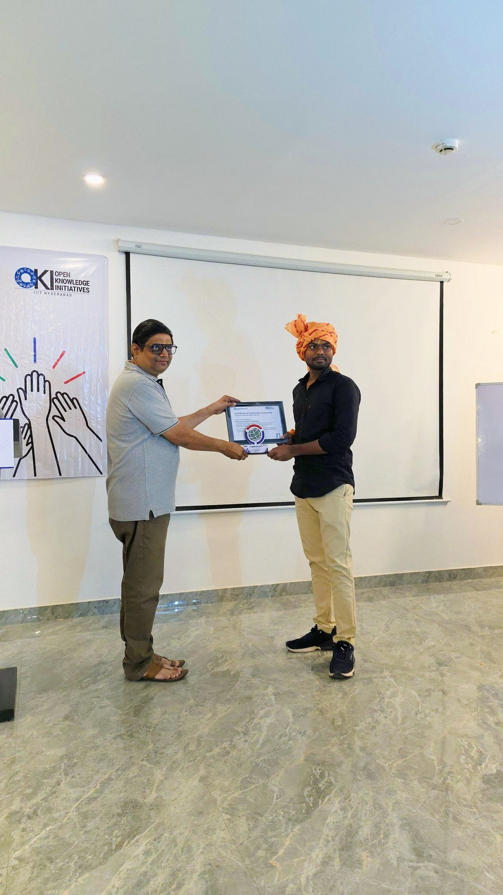
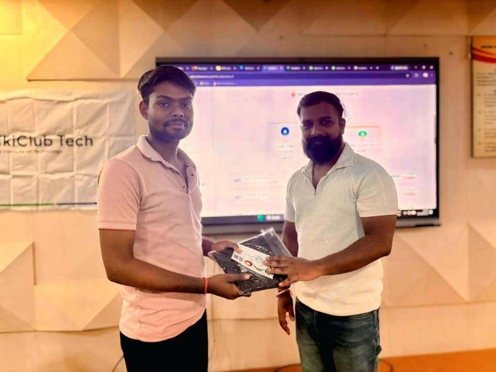
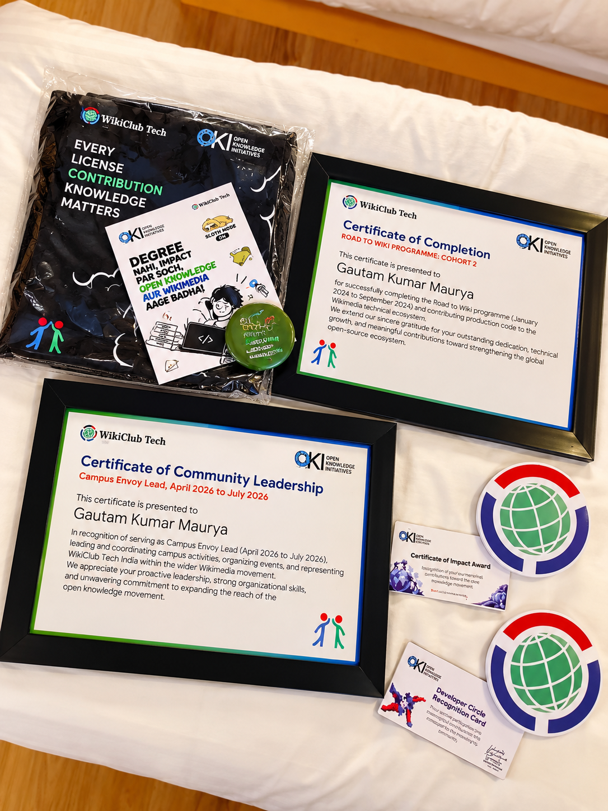

Road to Wiki
Cohort 2 Graduate &
Technical Fellow
Road to Wiki is a structured technical education program that trains university students across India to become active contributors to the MediaWiki and Wikimedia technical ecosystem. It is the flagship program of WikiClub Tech India, incubated by The Open Knowledge Initiatives (OKI) at IIIT Hyderabad with direct support from the Wikimedia Foundation.
Representing WikiClub Tech UIT and WikiClub Tech UU (United University), Gautam Kumar Maurya completed Road to Wiki Cohort 2 (Jan – Jun 2026), shipping production patches across Pywikibot Core, MinervaNeue, GrowthExperiments, and Function Orchestrator. Honored with an all-expenses-paid, fully funded 3-day trip to the Road to Wiki Graduation 2026 conclave at Hyderabad.


“A Community is a Loop, Not a Line”
The founding principle of WikiClub Tech India and the Open Knowledge Initiatives at IIIT Hyderabad.
“Every open source community is a loop. Students walk in as learners, grow into contributors, and the strongest return as mentors and leaders who train the next batch. Graduation is where we mark the loop turning. It is not the end of the programme for our Developers. It is the moment they cross into being the people who carry it forward.”
WikiClubTech High-Impact Technical Evaluation
Reporting period: January 2026 – June 2026. Evaluated and published by WikiClub Tech India under The Open Knowledge Initiatives (OKI), IIIT Hyderabad. Gautam was featured for 8 significant code patches across diverse technical layers.
Pywikibot Bot Framework & Test Reliability
Authored and hardened Python bot framework modules, resolving intermittent test flake, asynchronous execution delays, and network request stability across Wikimedia automation scripts.
WFFunctionCall Accessor Methods Architecture
Engineered clean object accessor methods for WFFunctionCall within Abstract Wikipedia's Function Orchestrator service to streamline function invocation routing and evaluation accuracy.
Malformed URI Fragment Handling on Mobile
Fixed unhandled exception crash when readers navigated to Wikipedia articles using malformed URI fragment identifiers on mobile devices, ensuring graceful fallback sanitization.
Gender Grammar Support for Mentored Messages
Implemented grammatical gender parameter handling in the newcomer onboarding system, guaranteeing grammatically authentic translations across gender-inflected global languages.
REST EntryPoint Cookie Expiry Normalization
Standardized mismatched cookie expiration parameter dictionary keys (expire vs expiry) in MediaWiki Core REST EntryPoint to stop silent session dropping.
CategoriesDetailsWidget Ampersand Entity Fix
Fixed double HTML entity encoding bug where ampersands rendered literally as & in category chips during media uploads on Wikimedia Commons.
Speaker & Mentor Network
The elite cohort of Wikimedia Foundation architects and open source engineering leaders who instructed and mentored Gautam during Road to Wiki Cohort 2.
Wikimedia Foundation Engineers
Core software architects and platform engineers
External Industry Experts & Architects
Government tech, Toolforge infra, and ecosystem mentors
Road to Wiki Graduation 2026
A three-day fully funded celebration in Hyderabad of the contributors, mentors, and community who shipped a year of open source. Held across on-site hotel, company office, and grand banquet hall.
Arrival, Welcome & Build
🌸 Swagat → 🎤 Keynote → 🏰 Castle Challenge → 🤖 Robot Build
Gautam arrived in Hyderabad via train. The evening moved intentionally from formal welcoming to playful networking and a late-night robotics assembly challenge where teams built and wired their battle robots.
- Hotel Swagat & Welcome Lunch
- Keynote: Beyond Road to Wiki
- Castle Challenge & Team Distribution
- Robo Build & Workbench Wiring
Industry Exposure, Robo War & Gala
🏢 Company Office → 🤖 Robo War → 🎓 Graduation → 🎉 Banquet DJ
Day tour of corporate tech offices with talks on Open Source at Scale, FOSS Solution Showcases, and an open AMA. Evening Robo War tournament in the arena followed by graduation awards and celebration dinner.
- Corporate Office Tour & WMF Engineering
- FOSS Solutions & Career AMA
- High-Energy Robo War Competition
- Formal Graduation Ceremony & Awards Gala
Checkout & Continue
☕ Breakfast → 🧘 Yoga → 🧳 Checkout → 🚆 Train Return
Morning mindfulness yoga session, networking breakfast, final group photographs with community leaders, hotel checkout, and train journey back with the mission to mentor the next wave of open source students.
- Community Breakfast & Informal Reflections
- Hotel Checkout & Gift Handover
- Train Departure Back to Prayagraj
- Stepping into Leadership & Mentorship
Awards & Official Recognitions Won
Honors presented to Gautam Kumar Maurya during Road to Wiki Cohort 2 and the WikiClub Tech India initiative.

🏆 Best ContributorRoad to Wiki Best Contributor
Awarded for code quality, architectural depth across MediaWiki Core, and proactive Gerrit reviews.

⚡ Most Active ContributorMost Active Contributor Award
Recognized for consistent commit velocity, multi-repo ticket resolutions, and community problem solving.

🥇 1st Rank College-WideWikiClub 1-Week Sprint 1st Rank
Clinched 1st Rank across United Institute of Technology for highest volume of merged upstream patches.

🌟 Fellowship ShowcaseWikiClub Tech Awards Showcase
Conclave celebration honoring student architects driving digital public goods across India.
The People Who Guided & Inspired Us
Beyond the code and commits, the greatest gift of Road to Wiki was meeting the community leaders whose vision and quiet persistence make open knowledge possible.
Ankit Kumar Verma
Project Coordinator, OKI - IIIT Hyderabad WikiClub Tech
“Meeting Ankit in person was special. When you are new to open source, you simply don't know where to start or whom to ask. Ankit built that structured entry point for students across India. He wasn't just someone coordinating the program — he was one of the central people who made this entire journey possible.”
Sarthak Parashar
Wikimedia Technical Ecosystem & MediaWiki Developer
“What I loved about talking to Sarthak was how easy it was to discuss complex MediaWiki problems without any intimidation. You don't have to just use open source — you can actually build something for systems that millions depend on every single day.”
Rachit Sharma
Wikimedia Movement Community Specialist
“Rachit made me realize something profound: a community cannot grow through code alone. Someone has to bring people together, create conversations, tell stories, and make contributors feel part of something bigger than themselves.”
Nivas Ramisetty
Community Operations & Program Facilitation
“There is so much work that participants never see — planning sessions, coordinating mentors, supporting logistics. Some of the most important contributions to a community aren't visible in a Git commit, but they make everyone else's contributions possible.”
Palivela Krupal Kashyap
OKI-IIITH Lead & Toolforge Infrastructure
“Krupal made me see that building an open knowledge ecosystem isn't just a technical challenge — it's an organizational and coordination challenge. Creating the right environment for people to contribute often has an even bigger impact than writing the code yourself.”
Tanveer Hasan
The Open Knowledge Initiatives Leadership
“Talking to Tanveer showed me how vast the Wikimedia movement truly is: governance, partnerships, funding, language diversity, and access to knowledge. Wikimedia is not just repositories; it is a movement built by humans, and technology is one way to empower them.”
Nitesh Gill
Punjabi Wikimedia Community Leader
“Nitesh taught me that real impact in open source rarely comes from a single big moment. It comes from showing up consistently year after year, answering questions, building language communities, and contributing even when nobody is watching.”
Frequently Asked Questions
Authoritative, structured answers regarding Road to Wiki Cohort 2, WikiClub Tech UIT & United University (UU), WikiClub Tech India, and Gautam Kumar Maurya's upstream engineering record.
01 What is Road to Wiki and how is it connected to WikiClub Tech India?
Road to Wiki is a structured technical education fellowship that trains university students across India to become active contributors and architects of the MediaWiki and Wikimedia open-source ecosystem.
It is the flagship technical initiative of WikiClub Tech India, incubated under The Open Knowledge Initiatives (OKI) at IIIT Hyderabad, with direct support and mentorship from senior engineers at the Wikimedia Foundation.
02 What is WikiClub Tech UIT and WikiClub Tech UU (United University)?
WikiClub Tech UIT and WikiClub Tech UU represent the official campus student chapter established at United Institute of Technology (UIT) and United University (UU) in Prayagraj, Uttar Pradesh.
As the designated WikiClub Tech Envoy, Gautam Kumar Maurya spearheaded open-source culture on campus, conducting hands-on developer workshops, Git/Gerrit onboarding sessions, and preparing students to qualify for national cohorts like Road to Wiki.
03 Who is Gautam Kumar Maurya in Road to Wiki Cohort 2?
Gautam Kumar Maurya (@Gkm563) is a core graduate and Technical Fellow of Road to Wiki Cohort 2 (Reporting Period: January 2026 – June 2026).
Gautam authored 8 high-impact patches featured in the official WikiClubTech High-Impact Technical Contribution Analysis and Impact Report I across Pywikibot, MediaWiki Core, MinervaNeue, GrowthExperiments, and Function Orchestrator.
04 What honors and awards did Gautam receive at Road to Wiki Graduation 2026?
During the 3-day Road to Wiki Graduation 2026 celebration in Hyderabad (Oct 2 – Oct 4, 2026), Gautam was awarded double honors:
- Best Contributor Award — Awarded for exceptional code quality, architectural depth, and core patch reviews.
- Most Active Contributor Award — Recognized for highest commit velocity and continuous upstream participation.
- 1st Rank in WikiClub Open Source Marathon — Leading the entire college in patch merges.
- Fully Funded Travel & Accommodation Fellowship — Sponsored by OKI IIIT Hyderabad & WikiClub Tech India.
05 Which Wikimedia Foundation engineers mentored Gautam during Road to Wiki?
Gautam was trained by senior Wikimedia architects including Santhosh Thottingal (Internationalization & language engineering), Pratik Singh (CI/CD core architecture), Krishna Chaitanya Velaga (Wiki developer tooling), Debajit Mallick (JavaScript masterclass), Vrijraj Singh (Developer platforms), Chakshu Gautam (Code for GovTech), Vasanth Gopa, Jay Prakash, and Palivela Krupal Kashap, alongside program coordinators Ankit Kumar Verma and Pavan Santhosh S.
Verified Wikimedia & OKI Portals
Explore official documentation, Phabricator project tags, community reports, and Gautam's contributor profile across the Wikimedia Foundation infrastructure.